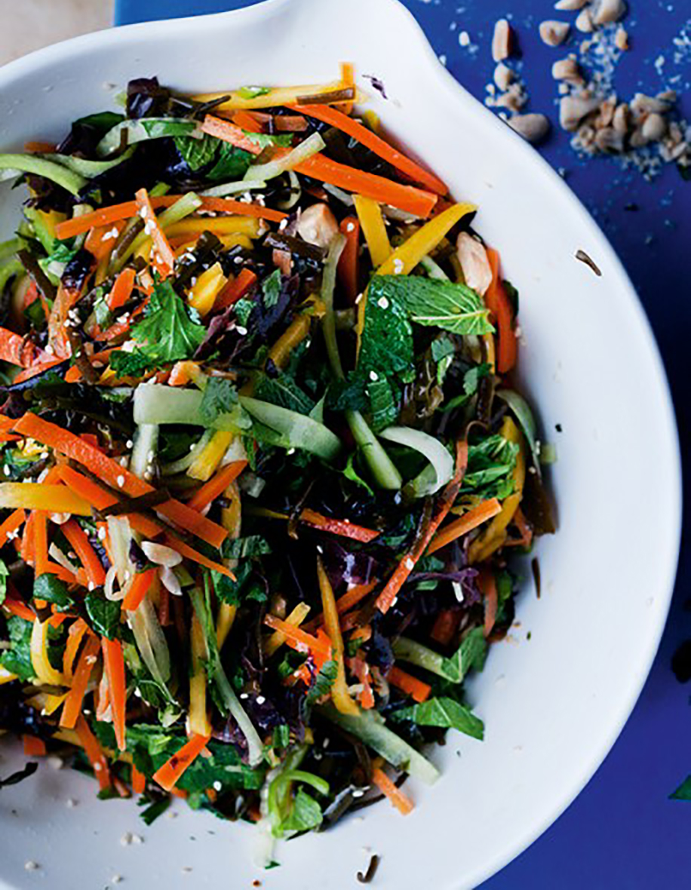

Seaweed, ginger and carrot salad

Sea spaghetti looks like dark fettuccine and has a
similar texture – you can get it in healthfood stores or online.
If you can't find any, use another seaweed such as wakame,
but use less of it.
INGREDIENTS
- 40g dried sea spaghetti
- 40g ginger, peeled and julienned
- 3 carrots, peeled and julienned
- 80ml rice-wine vinegar
- 1 tbsp caster sugar
- 1 whole cucumber, peeled, deseeded and julienned
- 1 large mango, peeled and julienned
- 70g peanuts, toasted and salted
- 2 tbsp sesame seeds, toasted
- 2 tsp lime juice
- 1 tbsp groundnut oil
- 20g coriander leaves, chopped
- 20g mint leaves, shredded
- Salt
METHOD
- Rinse the sea spaghetti in cold water, strain, cover generously
with cold water and set aside for 30 minutes.
- Bring a large pot of water to a boil. Drain the sea spaghetti and
place it in the boiling water with the ginger. Boil for two minutes,
add the carrots, boil for two minutes more, then drain and pat dry.
Transfer the blanched veg to a large bowl and, while still hot,
add the vinegar, sugar and a teaspoon and a quarter of salt.
Mix and set aside to cool.
- Once cool, stir in the remaining ingredients and serve.